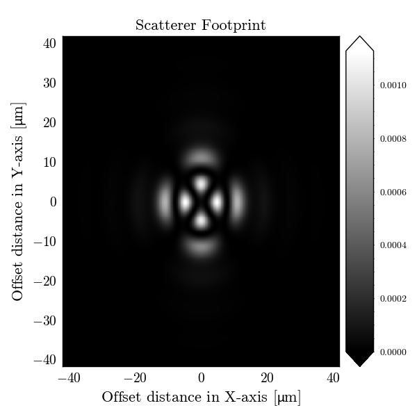

Examples#
A gallery of examples and that showcase how PyMieSim can be used. Some examples demonstrate the use of the API in general and some demonstrate specific applications in tutorial form.
Scatterers#

Scatterer Footprint Calculation and Visualization
Scatterer Footprint Calculation and Visualization
Detectors#
Experiments#
Validation#
Extras examples#
PyMieSim can be used in many ways. Below is a gallery of examples showing different ways to use the library.